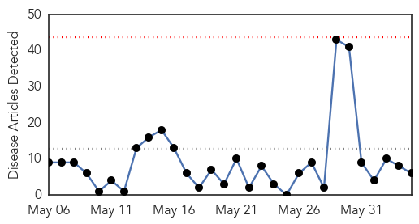
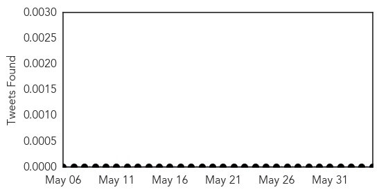
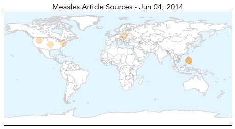
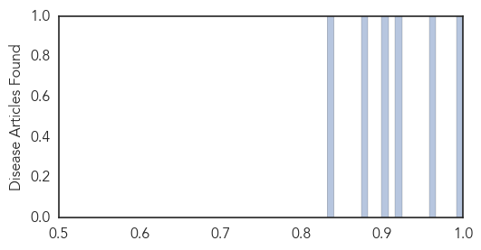

Toggle navigation
Early Warning
Daily Alerts
Measles
Jun 04, 2014
Compare to:
-
Dengue Fever
Hemmorhagic Fever
Mold/Fungal Infection
Influenza
Meningitis
Pertussis / Whooping Cough
Middle East Respiratory Syndrome
Cholera
Hepatitis
Chikungunya
Yellow Fever
Bubonic Plague
West Nile Virus
Swine Flu
Ebola
Unknown
Mumps
30 Day Trends
Web: 0
alerts
, 0
warnings
Twitter: 0
alerts
, 0
warnings
Top Articles:
1.000
News Scan for Jun 04, 2014
0.962
More measles cases in Ohio
0.923
Officials recommend measles vaccine for overseas travelers
0.904
When No One Is Safe From Measles
0.882
Healthbeat: Measles and your family
0.832
I'm No Anti-Vaxxer, But the Measles Vaccine Can't Prevent Outbreaks
Top Tweets:
No tweets found for Jun 04, 2014
Web/News Articles

Tweets

Article Locations

Article Confidences
